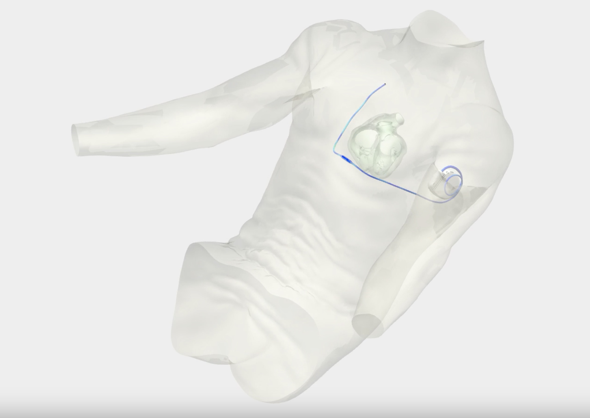

hover for info
Ex Vivo Torso Model for Abbott Medical
Cal Poly San Luis Obispo Mechanical Engineering Senior Project
This year long 4 person group project involved working for research and development engineers at Abbott Medical to produce a model of a torso for testing of subcutaneous implantable cardioverter defibrillators. This project involved 3D modeling and design for mechanical systems, editing anatomical models and building full scale torso sections, and 3D printing and silicone casting. I was specifically responsible for all of the mechanical and 3D design. Images of design are not shown due to a non disclosure agreement between myself and Abbott Medical. Image supplied by Abbott medical outside of NDA agreement.
